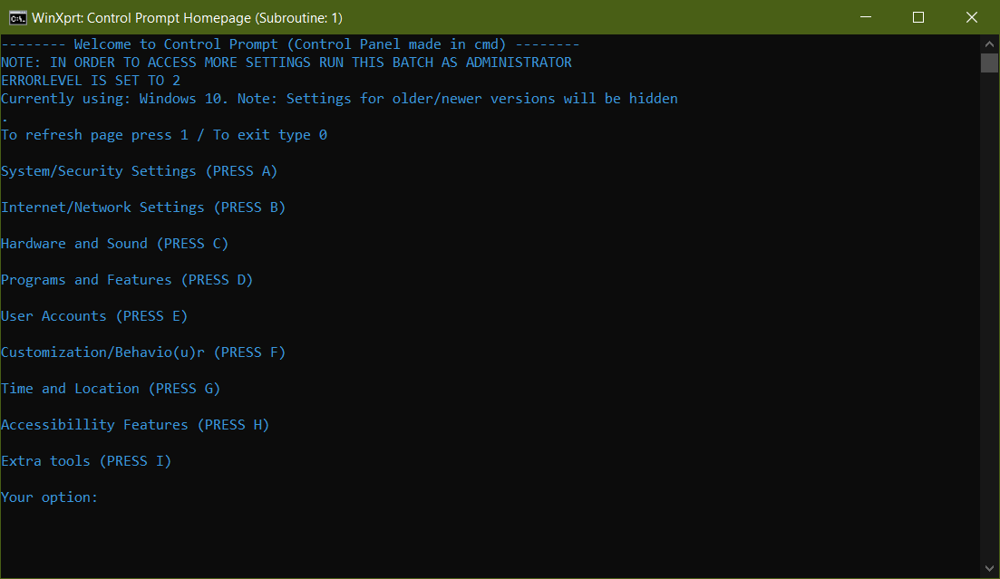
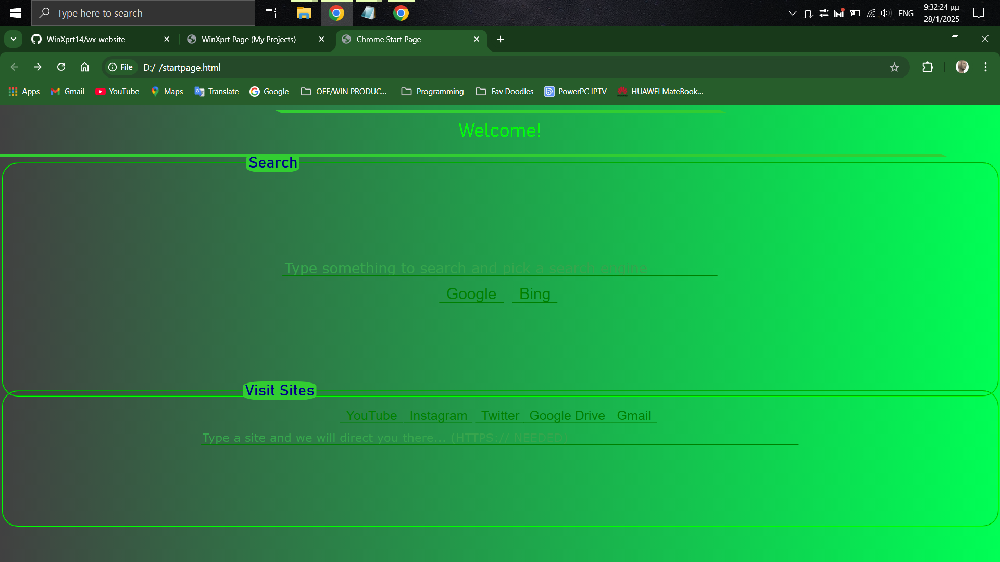

Have a look on some of the projects I've made since the last years!Last update: Saturday 1/2/2025
The ultimate settings tool just from batch!
This project is the one that took me the most time to make! With this batch script you can change system settings, customize appearance (+ Access to 'hidden' settings), change date/time and region settings and even more!
The NewTab HTML project
The best way to start browing the web just from an HTML! This HTML page has the ability to search on the web for you and even pick between Google's search engine or Bing's search engine. You also have the ability to go to any pages you want just by typing the FULL URL ADDRESS